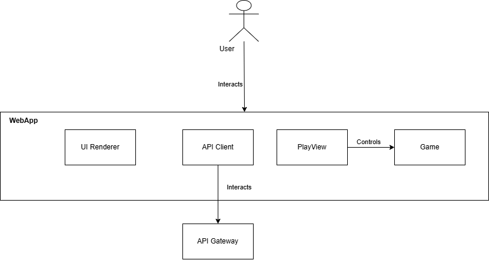

About arc42
arc42, the template for documentation of software and system architecture.
Template Version 8.2 EN. (based upon AsciiDoc version), January 2023
Created, maintained and © by Dr. Peter Hruschka, Dr. Gernot Starke and contributors. See https://arc42.org.
1. Introduction and Goals
This project was created and developed by a development team composed of students from the Software Architecture course at the School of Computer Engineering of the University of Oviedo.
Last year, the company HappySw launched a project aimed at updating an experimental online version of a quiz competition similar to "Saber y Ganar" for the RTVE network.
This year, the company ChattySw wants to expand its functionality so that contestants can interact with the application by receiving hints about the answers.
This is the development team:
-
Enol Rodríguez Hevia: UO287935
-
Alberto Fernández Azcoaga: UO179637
-
David González González: UO291047
-
Zinedine Álvarez Sais: UO294258
-
Alejandro Vega García: UO294615
-
Ignacio Llaneza Aller: UO294914
-
Daniel Uría Edroso: UO282813
1.1. Requirements Overview
-
The system will include at least a web frontend that will display images and answers, as well as a hint system that will allow users to receive clues about the images.
-
Users will be able to register in the system and consult the history of their participation in the system: number of games, number of correct/failed questions, times, etc.
-
The website must be deployed and accessible via the web.
-
The question data will be automatically generated from Wikidata API.
-
Users will be able to interact with the application for each question to obtain hints. This will be achieved through a language model (LLM) accessed via a provided API.
-
There will be a time limit to answer each question.
-
The system will provide API access to user information, which must be properly documented.
-
The system will also provide API access to the generated questions.
-
Each question will have one correct answer and several incorrect (distracting) answers. All answers will be genereated automatically.
-
A technique must be implemented to generate hints from Wikidata data while mitigating incorrect answers and hallucinations during interactions.
1.2. Quality Goals
| Priority | Quality Goal | Expectations |
|---|---|---|
1 |
Usability |
All people should be able to enjoy and finish with success the application within a reasonable limit of time |
2 |
Maintainability |
The application should be easy to maintain, with clear, well-documented code and modular design that allows for future updates. |
3 |
Accessibility |
The application should be usable by people with various disabilities, meeting common accessibility standards |
4 |
Availability |
The application should be available with minimal downtime, aiming for 99.9% uptime or better, and should be scalable to handle user demand |
5 |
Reliability |
The application should operate consistently and recover quickly from failures |
The top three (max five) quality goals for the architecture whose fulfillment is of highest importance to the major stakeholders. We really mean quality goals for the architecture. Don’t confuse them with project goals. They are not necessarily identical.
Consider this overview of potential topics (based upon the ISO 25010 standard):

You should know the quality goals of your most important stakeholders, since they will influence fundamental architectural decisions. Make sure to be very concrete about these qualities, avoid buzzwords. If you as an architect do not know how the quality of your work will be judged…
A table with quality goals and concrete scenarios, ordered by priorities
1.3. Stakeholders
| Role/Name | Contact | Expectations |
|---|---|---|
Teachers |
Jose Emilio Labra, Pablo González, Irene Cid, Diego Martín |
The teachers are the supervisors of the team and will help the team and should be accessible if the team needs them. |
Students |
Enol Rodríguez, Alberto Fernández, David González, Zinedine Álvarez, Alejandro Vega Ignacio Llaneza, Daniel Uría |
They are the development team. They should develop the application with success and learn through the process of the subject |
Users |
Anyone who interacts with the application |
They should be able to use the application without any problems and enjoy the experience. |
RTVE |
RTVE |
They are the primary stakeholders in the application, as they commissioned it to allow their viewers to use it. |
2. Architecture Constraints
2.1. Technical Constraints
| Constraint | Description |
|---|---|
Wikidata |
The application must interact with Wikidata to generate the questions and answers. |
Git and GitHub |
The project will have version control through Git. The repository will be in GitHub, where issues, "project" and wiki will be useful for project tracking. |
LLM |
The application must have a bot chat to interact with it. The chat have to be made by an LLM. |
2.2. Convention Constraints
| Constraint | Description |
|---|---|
Arc42 |
The project documentation will be done following the Arc42 template. Arc42 is a framework for documenting software architecture that provides a clear and structured approach to communicate architectural decisions, components, and requirements. |
Time |
The project deadline is May 5th, but there will be sprints during the process. Important dates are February 24th for the first verion of de documentation, March 17th for a prototype of the application, and April 7th for an almost finished application. |
2.3. Organizational Constraints
| Constraint | Description |
|---|---|
Team |
The team is made up of seven members who never worked together. The members will reunite at least one time per week to catch up on work and establish next objectives. |
Time |
The project deadline is May 5th, but there will be sprints during the process. Important dates are February 24th for the first verion of de documentation, March 17th for a prototype of the application, and April 7th for an almost finished application. |
3. Context and Scope
3.1. Business Context
| Communication partners | Inputs | Outputs |
|---|---|---|
Q&A |
Data from Wikidata, Hints from LLM’s, User Answers, User Requests |
Questions to User, Feedback to User, Queries to Wikidata, Requests to LLM’s |
USER |
Answer questions, request hints |
Question Presentation, Answer Feedback, Hint Presentation |
WIKIDATA |
Data queries (probably in SPARQL) |
Question and Answer Data (JSON format) |
LLM’S |
Hint Generation Request using a text prompt |
Generated hints |
3.2. Technical Context

| Communication partners | Inputs | Outputs |
|---|---|---|
Question service |
Question data-index |
Questions and answers |
User service |
Login info |
User info (account page) |
History service |
Session user info |
User’s history |
LLM service |
User text inputs |
Hints about the question |
Users |
Questions and possible answers |
Interaction to log in and answer to questions |
Wikidata |
Request for question data with category |
Question sources |
Persistence |
RAW data for questions and answers |
Structured data of questions and answers |
Webapp |
User inputs |
Browser outputs |
4. Solution Strategy
We develop an application of questions, like 'Saber y Ganar', in which the main objetive is to comunicate with a chatbot to obtain some hints for answer correctly each question.
We start from a ready-make application, which condition us when making some of the technical decisions.
-
JavaScript: JavaScript is a very flexible programming language widely used in software development. Besides, we decided to continue with this language due to the base application.
-
Node.js: Node.js is used to create server-side applications with JavaScript, so we decided to use it to make the back-end of our web app.
-
MongoDB: MongoDB is an open-source NoSQL database that uses a document-based data model for information storage and retrieval. Again its use is mainly due to the legacy project.
-
React JS: It’s a framework widely used to create user interface components. Chosen for the large volume of documentation and the fact that it is the framework used during the previous app.
4.1. Decissions made to achieve quality goals
-
Usability: Although usability is already guaranteed by the developers of the base application, we will try to make interaction with the chatbot simple so that it remains that way.
-
Maintainability: The entire team is committed to making clean and well-structured code, along with adequate documentation to enable good maintainability of the project.
-
Accessibility: In the event of making any changes that affect the accessibility of the application, we will ensure that it complies with the appropriate accessibility standards.
4.2. Relevant organizational decisions
-
Communication between team members is mostly made through Github, using issues to create and assign tasks, Whatsapp, to ask the rest of the team for help if needed for quick advice, and meetings.
-
For the tasks to be performed, we have decided to implement an author-reviewer mechanic to avoid a single person being in charge of a part of the application and minimize large avoidable errors.
5. Building Block View
The building block view shows the static decomposition of the system into building blocks (modules, components, subsystems, classes, interfaces, packages, libraries, frameworks, layers, partitions, tiers, functions, macros, operations, data structures, …) as well as their dependencies (relationships, associations, …)
This view is mandatory for every architecture documentation. In analogy to a house this is the floor plan.
Maintain an overview of your source code by making its structure understandable through abstraction.
This allows you to communicate with your stakeholder on an abstract level without disclosing implementation details.
The building block view is a hierarchical collection of black boxes and white boxes (see figure below) and their descriptions.

Level 1 is the white box description of the overall system together with black box descriptions of all contained building blocks.
Level 2 zooms into some building blocks of level 1. Thus it contains the white box description of selected building blocks of level 1, together with black box descriptions of their internal building blocks.
Level 3 zooms into selected building blocks of level 2, and so on.
See Building Block View in the arc42 documentation.
5.1. Whitebox Overall System
- Motivation
-
This view describes the decomposition of the WIChat system into several building blocks, focusing on the web application, external API interactions, and data handling, in order to provide an interactive and efficient user experience.
- Contained Building Blocks
-
-
Webapp: Manages the user interface and game logic.
-
User Authentication Service: Handles user registration and login.
-
Question Service: Generates and retrieves questions.
-
Hint Generation Service: Provides hints for users during the quiz.
-
API Gateway: Routes requests between the frontend and backend.
-
Database: Stores user data and question-related metadata.
-
- Important Interfaces
-
-
User API: Allows interaction with user data.
-
Question API: Provides access to questions and answers.
-
Hint API: Offers hints for the questions.
-
Both Question and Hint API will make use of external services (SONAR and Wikidata), and therefore will use their APIs.
| Name | Responsibility |
|---|---|
Webapp |
Main entry point for users. It renders the graphical interface and executes game logic in client. |
API Gateway |
Central request router between the Webapp and backend services. |
Question Service |
Generates and retrieves system questions, based on catrgory and difficulty level. |
User Authentication Service |
Manages user registration, authentication and administration. |
Hint Generation Service |
Generates hints for questions based on difficulty level, by means of a LLM. |
Database |
Stores user information and questions. Recieves requests to store questions and manages credentials. |
5.2. Level 2
5.2.1. WebApp
Composed of modules to handle the interface, game logic and API communication.

| Name | Responsibility |
|---|---|
UI Renderer |
Renders interface elements. |
Game Logic |
Controls application logic rules. |
API Client |
Manages calls to backend services. |
5.2.2. Question Service
Decomposed into modules for both managing questions and storing data.
| Name | Responsibility |
|---|---|
Question Repository |
Accesses and manipulates data in the database. |
Difficulty Manager |
Adjusts questions based on difficulty. |
WikiData Fetcher |
Queries WikiData for relevant information. |
5.3. Level 3
5.3.1. Webapp - API Client
Encapsulates comunication with backend services.
| Name | Responsibility |
|---|---|
UserAuth Client |
Manages user authentication |
Question Client |
Retrieves questions from the backend. |
Hint Client |
Requests hints from the corresponding service. |
6. Runtime View
6.1. Sign In
A user wants to create a new account. The user introduces the required information and clicks the "Sign In" button. The system validates the information and creates a new account. If all the process runs correctly, the system logs in the user and redirects to the main page.

6.2. Log In
A user wants to log in into the application. The user introduces the required information and clicks the "Log In" button. The system validates the information and if the user had already an account, redirects them to the main page.

6.3. New Question
A user wants to start a new round, it can be a new question or start a new game. The system generates a new question and shows it to the user. The user answers the question and the system validates the answer. The system updates the user’s score and stats, then shows the results to the user.

6.4. New Clue
A user wants to get a new clue for the current question. The GameService cheks if all the conditions are met and asks the LLMService for a new clue. The LLMService validates the clue and returns it to the GameService, which sends it to the GatewayService and finally to the WebApp.

6.5. Check Record
A user wants to check the record of a game session. The system loads all records and the user selects one to see the details. The system loads the details of the record and shows them to the user.

7. Deployment View
7.1. Infrastructure Level 1
- Motivation
-
The system is deployed on a virtual machine hosted on Microsoft Azure. This choice ensures high availability, simplified scaling, and seamless integration with Azure services, meeting the performance, maintainability, and security requirements of the application.
- Quality and/or Performance Features
-
-
Scalability: The containerized microservices architecture allows for scaling individual components based on demand.
-
Portability: Docker containers ensure consistent execution across various environments.
-
Maintainability: Isolation of services enables independent updates and minimizes downtime.
-
Security: Azure provides robust security features and network isolation, protecting both data and services.
-
- Mapping of Building Blocks to Infrastructure
-
The deployment maps the following building blocks:
-
User Interface: Delivered via a web application hosted on an Azure virtual machine.
-
Microservices: Packaged as Docker containers within the Azure VM, each responsible for distinct functionalities (e.g., user management or question generation).
-
Persistence Layer: A dedicated container hosting the database, accessible only to internal services.
-
External Services: Secure connections are established to external APIs (e.g., Wikidata) to fetch dynamic content.
-
Below is a diagram summarizing the infrastructure distribution:

7.2. Infrastructure Level 2
This section provides a detailed view of selected infrastructure elements from Level 1.
7.2.1. Azure Virtual Machine Hosting the Web Application
This element represents the Azure virtual machine that hosts the web application. The VM runs a supported operating system (e.g., Ubuntu) and includes the Docker engine to manage containerized services.

Explanation: The Azure VM was selected for its reliability and integrated security features. Hosting the web application in a Docker container on Azure facilitates quick scaling and streamlined management while leveraging Azure’s global network infrastructure.
7.2.2. Docker Container Environment
Within the Azure VM, the Docker engine orchestrates several containers, each encapsulating a microservice. This environment supports modular development and independent scalability.

Explanation: The Docker container environment isolates each microservice, enabling independent updates and robust fault tolerance. Internal communication is handled through the Docker network, ensuring efficient and secure interactions between services.
| Building Block | Infrastructure Mapping |
|---|---|
Web Application (UI) |
Runs in the Web Application Container on the Azure VM, accessible to users via HTTP/HTTPS. |
Microservices (User Service, Question Service, LLM Service) |
Each microservice is packaged in its own Docker container within the Docker Engine on the Azure VM, communicating over an isolated internal network. |
Persistence (Database) |
Deployed as a dedicated container, ensuring secure data storage and access limited to internal services. |
External API (Wikidata) |
Accessed securely over the public internet by relevant microservices. |
8. Cross-cutting Concepts
This section describes overall, principal regulations and solution ideas that are relevant in multiple parts (= cross-cutting) of your system. Such concepts are often related to multiple building blocks. They can include many different topics, such as
-
models, especially domain models
-
architecture or design patterns
-
rules for using specific technology
-
principal, often technical decisions of an overarching (= cross-cutting) nature
-
implementation rules
Concepts form the basis for conceptual integrity (consistency, homogeneity) of the architecture. Thus, they are an important contribution to achieve inner qualities of your system.
Some of these concepts cannot be assigned to individual building blocks, e.g. security or safety.
The form can be varied:
-
concept papers with any kind of structure
-
cross-cutting model excerpts or scenarios using notations of the architecture views
-
sample implementations, especially for technical concepts
-
reference to typical usage of standard frameworks (e.g. using Hibernate for object/relational mapping)
A potential (but not mandatory) structure for this section could be:
-
Domain concepts
-
User Experience concepts (UX)
-
Safety and security concepts
-
Architecture and design patterns
-
"Under-the-hood"
-
development concepts
-
operational concepts
Note: it might be difficult to assign individual concepts to one specific topic on this list.

See Concepts in the arc42 documentation.
8.1. Domain concepts
8.1.1. Domain model

8.1.2. Domain description
| Term | Description |
|---|---|
User |
Represents a user of the application. |
UserRecord |
Stores all the game sessions in which a user has participated and keeps their total score. |
GameSession |
Represents a game session played by a user, storing all the questions, the choices made, and the total score. |
Question |
Represents questions shown to the user by the application and stores the wrong choices, correct choices, and the text that is displayed. |
Choice |
Represents the choices that the user can make when answering a question. It stores the text of the choice and indicates if it was selected by the user. |
8.2. Microservices architecture
We have decided that our architecture will be based on microservices, which means that every part of the aplication will be divided in a service that performs a specific function. The services can communicate witch eachother using their repective APIs or via the shared database
8.3. Build, Test, Deploy
The project follows a CI/CD pipeline that automates the build, test, and deployment processes. This ensures that the application is always up-to-date and working correctly.
8.4. Usability
Usability is crucial for any application, as it directly impacts user interaction efficiency. To ensure our app’s usability, we conducted extensive user research, leading to an intuitive interface design. Employing a user-centric approach throughout development, we prioritized user experience, facilitating easy navigation
8.5. <Concept n>
<explanation>
9. 9 Architectural decisions
9.1. 9.1 Use of Large Language Models (LLMs) in the System
We will use LLM in our question-and-answer application to generate hints during the user’s turn.
Decision:
It was decided to integrate Large Language Models (LLMs) through external APIs to generate real-time responses and hints.
The selected models are Gemini-1.5-Flash (Google) and Qwen2.5-Coder-7B-Instruct (Empathy AI)
because they are the ones integrated into the base project software.
Consequences
Consequently, we need a structured knowledge source, in our case Wikidata,
from which we will extract and process the information to provide it to the user and also we must learn to create effective prompts.
To know more about Prompt Engineering Issue #4.
9.2. 9.2 Using Wikidata as the main knowledge base
We require a structured and up-to-date knowledge base, so we decided to utilize Wikidata
as the primary information source.
Decision made in Acta 2 ‐ 10 02 2025.
Justification
-
Wikidata is an open, structured database offering information in RDF and SPARQL formats.
-
It enables flexible integrations with our backend systems.
Consequences
-
Optimal performance requires expertise in SPARQL query optimization.
-
Data updates are dependent on the Wikidata community.
To learn basic concepts about Wikidata and SPARQL Issue #6.
9.3. 9.3 Choosing React for the Frontend
We require an efficient framework for frontend development so we decided to utilize
React for the user interface.
Decision made in Acta 2 ‐ 10 02 2025.
Justification
-
React’s declarative nature facilitates the construction of interactive user interfaces.
-
The integration of React with Wikidata is straightforward and user-friendly, simplifying data management and display.
As a consequence, most part of the team will require React training because it is a new technology for many of us.
To learn basic concepts about React Issue #7.
9.4. 9.4 Using Node.js for Backend Development
We require an efficient and scalable technology for the backend so we will
utilize Node.js to solve this problem.
Decision made in Acta 2 ‐ 10 02 2025.
Justification
Node.js is highly efficient for asynchronous and high-traffic applications.
Furthermore, it is a great opportunity for many of us to learn how to use this important technology in the software development world.
New knowledge about Node.js Issue #3
9.5. 9.5 Selecting MongoDB for the Database
Due to the requirement for flexible storage of structured and unstructured data,
we have chosen a NoSQL database over SQL.
Decision made in Acta 2 ‐ 10 02 2025.
Justification
-
It facilitates the storage of semi-structured data in JSON format.
-
It works very well with Node.js and is highly scalable.
Consequences
Query optimization may be required for handling large data volumes. Although we
have had some exposure to NoSQL databases, further training and development in this area will be necessary to optimize their usage.
To learn basic concepts about MongoDb and practice examples Issue #9.
10. Quality Requirements
In order to make Wichat a satisfactory final product, we find it crucial to set some quality requirements to live up with. These aspects are to influence architectural decisions and hence include some measurable features:
-
Usability: Intuitive and easy interfaces, reducing the volume of help needed in order to use the application.
-
Mantainability: Long-term enhancement support requiring minimal effort.
-
Accesibility: Make the application usable to people with diverse disabilities.
-
Reliability: Contistency and easy recovering.
-
Availability: Handling increased traffic without compromising performance.
Moreover, some other non-functional requirements, while less prioritary, are still relevant:
-
Performance: A smooth user experience, ensuring responsiveness and minimal delays.
-
Security: Basic measures, even if sensitive data is not handled.
-
Compatibility: Accesibility across diferent devices and screen sizes.
10.1. Quality Tree

10.2. Quality Scenarios
ID |
QA |
Scenario |
Priority |
Q1.1 |
Usability |
The system must allow a player to start and quit a game without external help, within 3 minutes of opening the app, thanks to clear and simple interfaces. |
High |
Q1.2 |
Usability |
Users must be able to navigate between different game sections (settings, chat, etc.) in no more than 2 taps. It should take under 10 seconds for an average user. |
High |
Q2.1 |
Mantainability |
The addition of new questions must be quick and simple without interrupting the application flow. It should take approximately 5 minutes, this entailing no downtime for the application. |
High |
Q2.2 |
Mantainability |
The system must allow the implementation of new game models with minimal changes to the existing codebase, which should not take more than 1 hour. There should not be any regression in existing game functionality. |
Low |
Q3.1 |
Accessibility |
The application must support screen readers for users with visual impairments, guaranteeing as well buttons and answers that are simple to read. All interactive elements must have alternative text, and the screen reader should process the entire game in under 30 seconds for each screen. |
High |
Q3.2 |
Accessibility |
An option for high-contrast mode for users with daltonism or another visual disability must be provided. The color contrast between text and background must have a contrast radio of at least 4.5:1 |
High |
Q4.1 |
Reliability |
If the system fails during a game, it should allow the user to resume the game from the last saved state. No more than 1 minute of progess should be lost. |
Medium |
Q5.1 |
Availability |
The system must mantain 99.9% uptime over a month, including the peak usage period. Downtime must not overcome 45 minutes/month. |
High |
P1.1 |
Performance |
The product must respond to a player’s request in less than 0.5s. |
High |
P1.2 |
Performance |
The application should give support to approximately 100 simultaneous request without significant downgrade in performance |
Medium |
S1.1 |
Security |
It must be ensured that player personal data (especially credentials) is encrypted, even if no sensitive data is handled. 0 data breaches must be admitted |
Medium |
S1.2 |
Security |
The system must log all user actions related to account creation and gameplay. Unauthorized attempts to read private account information should trigger an alarm within 5 minutes |
Low |
C1.1 |
Compatibility |
The game should work correctly on both mobile and desktop devices, adjusting the dessign for different screen sizes, at least between 4"-27". |
Medium |
C1.2 |
Compatibility |
The system must support the latest versions of popular browsers (Chrome, Safari, Firefox, etc.). It should be completely functional, with 0 visual/functional issues. |
Medium |
11. Risks and Technical Debts
12. Contents
A list of identified technical risks or technical debts, ordered by priority
13. Motivation
“Risk management is project management for grown-ups” (Tim Lister, Atlantic Systems Guild.)
14. Form
List of risks and/or technical debts, probably including suggested measures to minimize, mitigate or avoid risks or reduce technical debts.
| Risk | Relevance | Considerations |
|---|---|---|
Limited expertise in specific tools or programming languages |
2 |
The team may encounter difficulties due to varying levels of familiarity with required tools and languages. To address this, we will prioritize the use of well-known technologies within the team while encouraging knowledge-sharing and individual learning efforts. |
Lack of prior collaboration within the team |
1 |
Since the team has not worked together before, there is a risk of inefficiencies in coordination. Establishing clear communication channels and regularly updating each other on progress will mitigate this issue. |
Large team size |
1 |
A higher number of contributors can complicate communication and workflow synchronization. Implementing structured meetings and documentation processes should help maintain efficiency. |
Potential delays in integrating external APIs |
2 |
Depending on external data sources, such as Wikidata, might introduce latency or downtime risks. Developing fallback mechanisms and caching strategies can help mitigate disruptions. |
Knowledge disparity among team members |
2 |
Some team members have prior experience, either from retaking the course or external knowledge, while others are learning these concepts for the first time. This can lead to uneven task distribution and communication gaps. Encouraging mentoring and pairing experienced members with those less familiar can help balance the workload and improve overall team efficiency. |
14.1. Technical Debts
| Technical Debt | Considerations |
|---|
15. Further Information
See Risks and Technical Debt in the arc42 documentation.
16. Glossary
| Term | Definition |
|---|---|
LLM |
Large Language Model, a type of AI model that can generate human-like text. |
Chatbot |
It’s a computer programme that simulates human conversation with an end-user. |
Framework |
A framework is an outline that provides a basic structure for developing a project with specific objectives, a kind of template that serves as a starting point for the organisation and development of software. |
Front-end |
Front-end includes drop-down menus, images, icons, colours, graphic elements, animations and everything related to improving the user’s browsing experience. |
Back-end |
Back-end is responsible for the server, database and application logic. |
API |
APIs are mechanisms that allow two software components to communicate with each other through a set of definitions and protocols. |